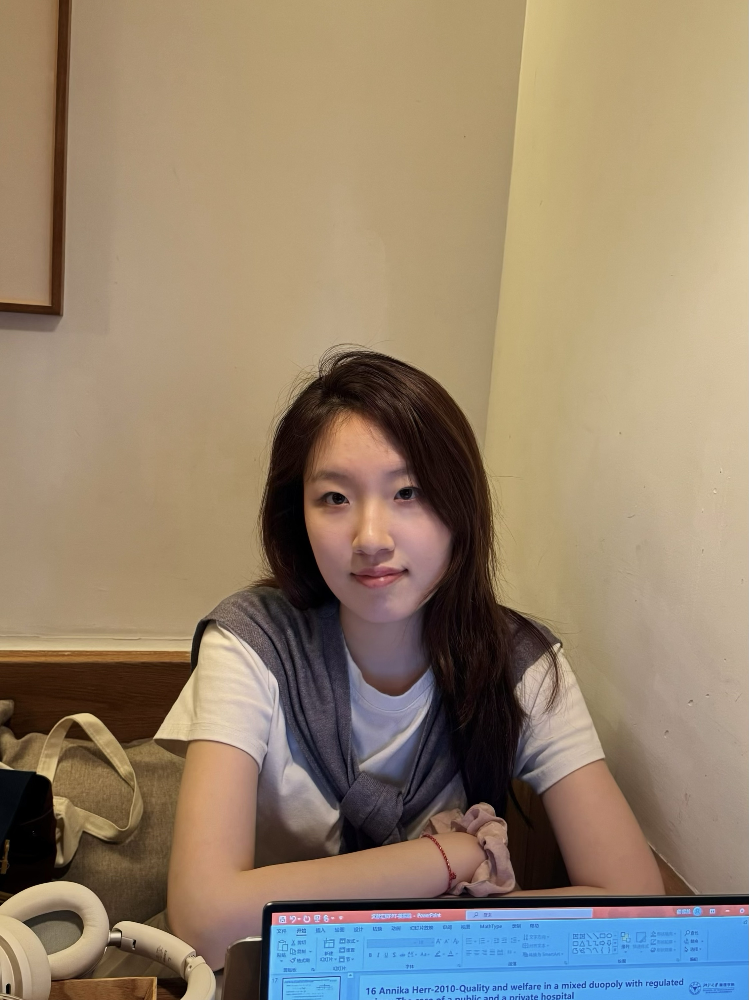

Attention & Marketing
How visual attention shapes the processing of marketing stimuli and information, and how that processing relates to consumer decisions.

Management Science & Engineering
PhD Student
School of Management, Zhejiang University
I study how attention shapes judgment in marketing contexts. My work focuses on visual attention and decision making, with a particular interest in how people—and increasingly AI systems—perceive and interpret information.
I use eye tracking, behavioral experiments, and computational methods to examine these questions. Outside research, I enjoy playing volleyball—another setting where attention, timing, and coordination matter.
01
My research lies at the intersection of marketing and eye tracking. I examine how visual attention informs what people notice, how they interpret it, and the decisions that follow.
How visual attention shapes the processing of marketing stimuli and information, and how that processing relates to consumer decisions.
Using eye tracking and behavioral experiments to understand patterns of information processing and choice.
Exploring how people and AI systems, including vision-language models, differ and converge in allocating attention to visual information.
02
The Impact of the Cold-Colored Ambience on Nudging Healthy Food Preferences
When Scarcity Meets Sustainability: Consumer Preferences for Recycled Products